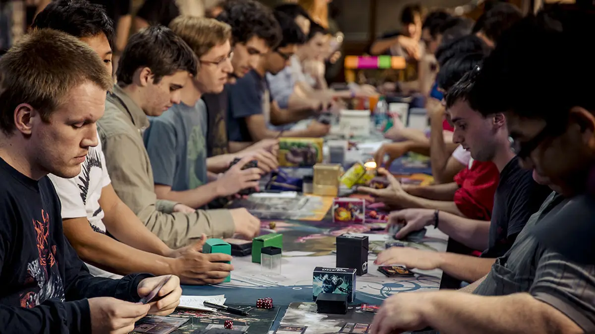
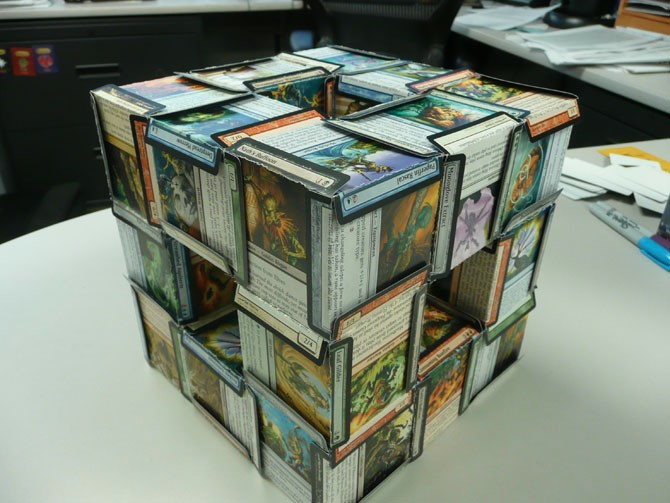

Meeting Location
UNC Charlotte's Magic Club is located in the Science Building. Magic the Gathering games are held Tuesday and Thursday in Science 104 at 7:00 pm. Everyone is welcome to drop in and join any games that are open or start their own games during club meeting hours. Students can reach the building by foot or via the buses provided free on campus.
Tuesday Meeting
Tuesday Meetings are a great place for beginners, intermediate, and even expert level Magic players to meet up and play casually. The grand majority of members play Commander/EDH, but all formats all welcome and held by studetns. New players are welcome to join casual games on Tuesday and if you don't have a deck, club members can provide materials for ease of play.
Thursday Meeting
Thursday Meetings is when the weekly Vintage Cube Night is held. Students are welcome to join the club's vintage cube draft. The max number of participants are 12, so we ask you RSVP on Discord or on the form under Cube on the site. It's a limited participant game format that is highly competitive. If no spaces are left, please reach out on the Discord server to an admin and they can further assist you.
